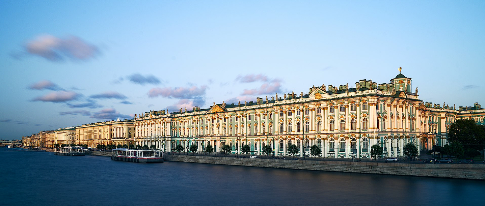
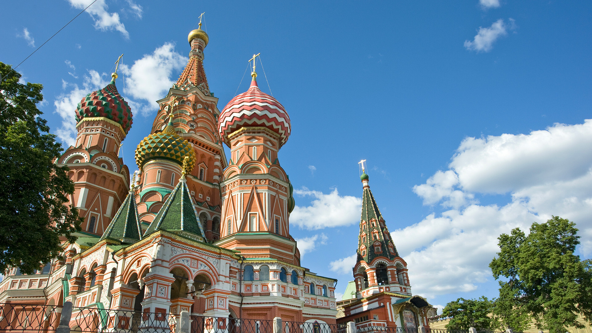

Rusia adalah negara yang terletak di Eurasia, membentang dari Eropa Timur hingga Asia Utara.
Rusia adalah negara yang besar, dengan budaya yang beragam dan sejarah yang sangat panjang. Negara ini juga memiliki pengaruh besar dalam politik dunia dan merupakan salah satu kekuatan utama di dunia.
Kremlin Moskow
Kremlin Moskow adalah salah satu kompleks benteng dan istana terkenal di dunia yang terletak di pusat kota Moskow, Rusia. Ini memiliki sejarah yang sangat panjang dan kaya, dan telah menjadi pusat politik, budaya, dan sejarah Rusia selama berabad-abad.
Berikut adalah sejarah singkat Kremlin Moskow:
Abad Pertengahan Awal : Kremlin Moskow pertama kali dibangun pada abad ke-12 oleh Pangeran Yuri Dolgorukiy, yang merupakan pemimpin Moskow awal. Ini adalah benteng kayu yang digunakan untuk melindungi kota Moskow dari serangan suku-suku asing.
Perluasan dan Pembangunan : Selama berabad-abad, Kremlin mengalami berbagai perluasan dan renovasi di bawah pemerintahan berbagai Tsar dan pemimpin Rusia. Batu digunakan sebagai bahan utama untuk memperkuat dan memperluas benteng ini.
Era Tsar : Pada abad ke-14, Kremlin menjadi pusat pemerintahan untuk Tsar Rusia. Ini adalah tempat tinggal resmi Tsar dan pusat administrasi negara. Selama masa pemerintahan Ivan yang Mengerikan, beberapa bagian Kremlin diubah dan diperluas, termasuk Katedral St. Basil yang terkenal.
Zaman Soviet : Setelah Revolusi Rusia tahun 1917, Kremlin Moskow menjadi pusat pemerintahan Soviet. Gedung-gedung di dalam Kremlin digunakan sebagai markas besar pemerintah dan tempat pertemuan penting. Kremlin menjadi simbol kekuasaan politik Uni Soviet.
Masa Kini : Setelah pembubaran Uni Soviet pada tahun 1991, Kremlin tetap menjadi pusat pemerintahan Rusia. Kini, Kremlin adalah tempat kediaman resmi Presiden Rusia, lokasi berbagai upacara kenegaraan, dan situs wisata populer bagi wisatawan yang tertarik dengan sejarah dan budaya Rusia.
Kremlin Moskow adalah tempat yang sangat penting dalam sejarah Rusia, dan hingga hari ini, masih memiliki peran penting dalam pemerintahan negara. Ini juga merupakan salah satu tempat bersejarah dan budaya yang paling terkenal dan sering dikunjungi di Rusia. Dalam kompleks ini, Anda dapat melihat berbagai bangunan bersejarah, museum, gereja-gereja, dan harta seni yang menggambarkan perjalanan panjang Rusia melalui sejarahnya.
Istana Hermitage

Istana Hermitage, yang juga dikenal sebagai Hermitage Museum, adalah salah satu museum seni terbesar dan paling terkenal di dunia, terletak di kota St. Petersburg, Rusia.
Berikut sejarah singkat Istana Hermitage:
Pendirian dan Asal Usul : Istana Hermitage awalnya didirikan oleh Tsarina Catherine the Great pada tahun 1764 sebagai benteng dan tempat tinggal musim panas untuk Tsar dan keluarganya. Istana ini dirancang untuk menjadi tempat tinggal yang bergaya, yang juga akan menjadi rumah bagi koleksi seni dan budaya yang besar.
Perkembangan Koleksi : Catherine the Great memiliki minat yang kuat dalam seni dan budaya, dan selama masa pemerintahannya, koleksi seni Istana Hermitage terus berkembang. Dia mengumpulkan ribuan lukisan, patung, artefak arkeologi, dan harta seni lainnya dari seluruh dunia, yang menjadi dasar koleksi museum ini.
Ekspansi : Selama berabad-abad, Istana Hermitage mengalami berbagai perluasan dan renovasi. Selain istana utama, kompleks ini juga mencakup berbagai bangunan lain seperti Istana Musim Dingin, yang menjadi bagian dari museum.
Pergantian Pemilik : Setelah Tsar dan Tsarina Rusia, Istana Hermitage terus menjadi museum dan pusat seni yang terkenal. Selama masa Revolusi Rusia dan pembentukan Uni Soviet, koleksi seni museum ini diambil alih oleh pemerintah Soviet.
Hari ini, Istana Hermitage adalah salah satu museum seni terkemuka di dunia, dengan koleksi yang mencakup jutaan karya seni dan artefak bersejarah. Museum ini menampilkan seni dari berbagai periode dan budaya, termasuk seni Eropa, seni Rusia, seni Asia, arkeologi, dan banyak lagi. Selain itu, bangunan-bangunan istana yang indah juga merupakan daya tarik wisata yang sangat populer di St. Petersburg.
Katedral Santo Basilius

Katedral Santo Basilius, juga dikenal sebagai Katedral Vasilius Agung, adalah salah satu bangunan bersejarah yang paling ikonik di Moskow, Rusia.
Berikut sejarah singkat Katedral Santo Basilius:
Awal Pembangunan : Katedral Santo Basilius dibangun pada tahun 1555-1561 atas perintah Tsar Ivan IV, yang juga dikenal sebagai Ivan yang Mengerikan. Pembangunannya diinisiasi untuk memperingati penaklukan Khaan Kazan dan Khaan Astrakhan, yang mengamankan perbatasan Rusia di timur.
Nama Asli : Awalnya, katedral ini dikenal sebagai "Katedral Tentara Kudus dan Tanah Suci di Khariton" atau hanya "Katedral Khariton." Nama Santo Basilius dikaitkan dengan katedral ini setelah kematiannya pada tahun 1588.
Desain Unik : Salah satu fitur paling mencolok dari Katedral Santo Basilius adalah desainnya yang sangat unik dan warna-warninya yang cerah. Bangunan ini terdiri dari sembilan kubah yang terhubung, dengan delapan menara kecil yang mengelilingi kubah utama. Setiap menara dan kubah memiliki desain yang berbeda, menciptakan tampilan yang sangat mencolok.
Penutupan dan Restorasi : Selama berabad-abad, Katedral Santo Basilius mengalami berbagai perubahan, penutupan, dan pemugaran. Selama masa Soviet, katedral ini ditutup dan digunakan untuk berbagai tujuan profan. Namun, pada tahun 1991, setelah runtuhnya Uni Soviet, katedral ini dibuka kembali untuk ibadah dan wisatawan.
Warisan Dunia : Katedral Santo Basilius diakui sebagai Situs Warisan Dunia UNESCO pada tahun 1990 sebagai salah satu contoh terbaik arsitektur abad ke-16 di Rusia.
Hari ini, Katedral Santo Basilius adalah salah satu daya tarik wisata paling terkenal di Rusia dan menjadi salah satu ikon Moskow. Pengunjung dapat menjelajahi interior katedral, yang menggabungkan elemen-elemen seni yang indah dengan sejarah yang kaya. Katedral ini juga sering menjadi latar belakang perayaan dan acara penting di Moskow.